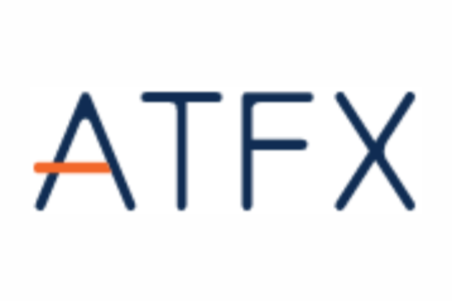
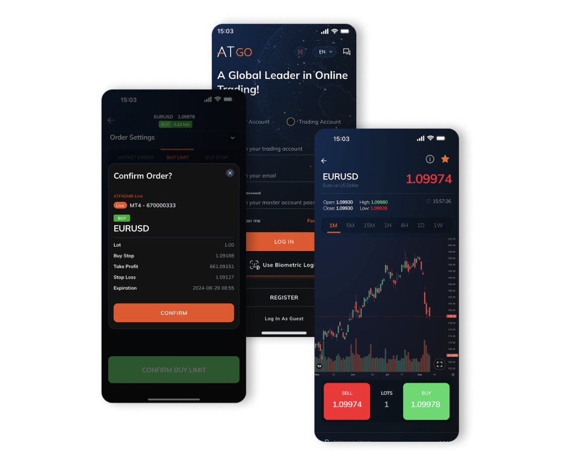

ATFX Review: A Closer Look at Features, Security, and Performance

Since the online trading industry keeps growing daily, it could be challenging for some to find the right broker. Understanding that, we are here to help you simplify the process. One of the best ways to identify the company that meets your trading needs and preferences is to read broker reviews.
Today, we will take a close look at ATFX, a global trading firm known for its regulatory strength and comprehensive tools. Given its distinctive strengths, we believe that it's certainly worth exploring. Our detailed ATFX review today will help you understand why it is often regarded as one of the top CFD brokers in the industry.
Security and Compliance

It is necessary to check the licenses of the broker you intend to engage with so you can protect yourself and your funds. Thankfully, ATFX is authorized and regulated by many prestigious authorities, including the FCA, FSCA, ASIC, SCA, CySEC, FSC, and SFC. People can find detailed information about the registration number at the bottom of the official site—those who question whether ATFX scam now know the answer.
In addition, the brand separates client deposits from corporate funds to guarantee that it does not use trader funds for its own business operation. With negative balance protection, beginners who have little experience dealing with how fast markets move can rest assured knowing that their accounts are not negative. No matter the market conditions, ATFX offers a strong commitment to safeguarding its clients.
Trading Platforms and Tools
Clients can choose to trade on Trading Platform 4, Trading Platform 5, or via a proprietary mobile trading app for iOS and Android devices. Each comes with different tools and features that cater to traders of all levels. Notably, ATFX recently launched its mobile application, AT Go, which is compatible with the Trading Platform 4 and is implementing Trading Platform 5. This app enables users to manage, switch and trade across all their ATFX accounts directly from their mobile devices.
Trading Platform 4 is known for its ease of use and flexibility, enabling users to buy and sell assets anytime, anywhere. It also provides a user-friendly interface and a wide range of chart analysis tools.
Trading Platform 5 can also be accessed from multiple devices like Trading Platform 4, but the key difference is that it has a more advanced interface with additional features and functionalities, which is ideal for experts. Other services from Trading Central and Autochartist are worth trying if you want to make more informed trading decisions.
Another highlight of choosing this firm is that you have the option to join a copy trade program. This means traders can copy the pros without much effort and earn what they earn. The CopyTrade platform fosters a collaborative trading environment, enabling users to observe, discuss, and replicate the strategies of experienced traders, promoting continuous learning within the trading community.
Account Types
As many other ATFX reviews say, we agree that the brand has developed a series of trading accounts, including Standard, Edge and Premium. Through them, customers can trade all instruments with competitive spreads.
Our ATFX review can not be complete without talking about its demo account. In our opinion, it is a good starting point for any person's trading journey. Even if you are already familiar with the platform, you can keep a demo account running alongside the live one to experiment with the viability of the methods and strategies you have just built.
ATFX safeguards client funds through its Client Funds Insurance program - underwritten by Lloyd's of London - which provides coverage of up to USD 1,000,000, offering traders an added layer of protection and peace of mind.
In addition, ATFX has earned numerous global awards, such as Best Online Trading Company Global 2024, reinforcing its global reputation and solidifying its position as a leading player in the financial trading industry.
Bottom Line
All in all, ATFX is a reliable and trustworthy trading partner that you should consider working with in 2025. As outlined in our review, its strong regulatory foundation, advanced tools, and client-focused services make it a top choice for traders. Notably, the brand continues to expand its presence across Southeast Asia, with particular efforts to enhance education and support for traders in the Philippines.
There are many other exclusive offers that we have not mentioned yet. You had better visit the website by yourself and explore. As one of the top 10 forex brokers, we believe the brand will not disappoint you.